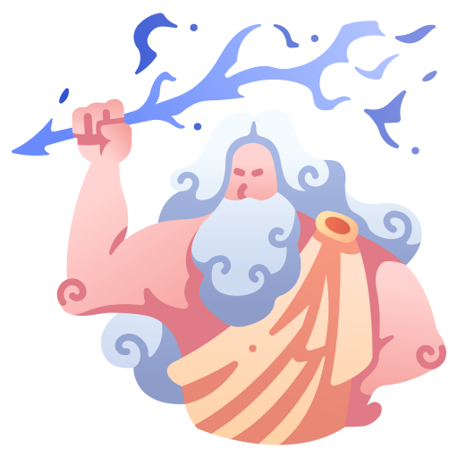
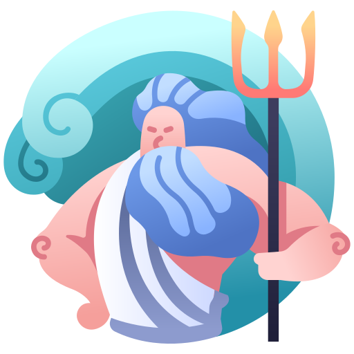
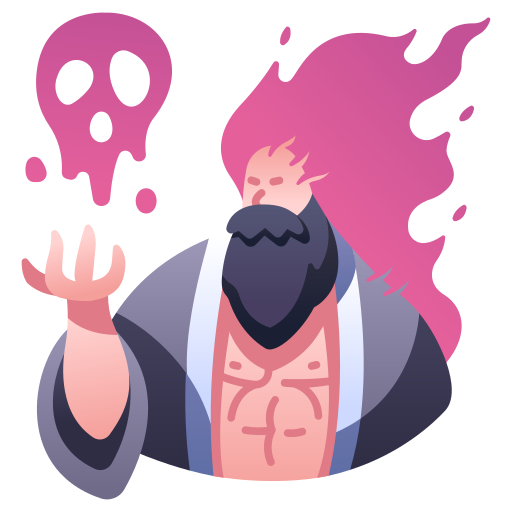
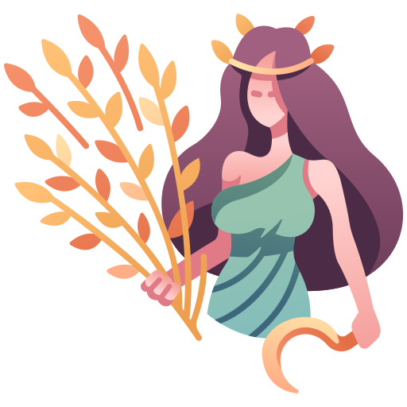
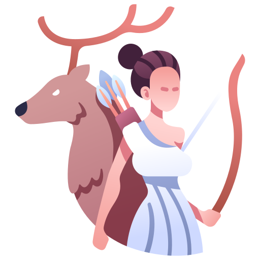
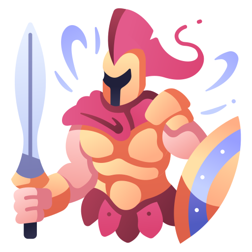
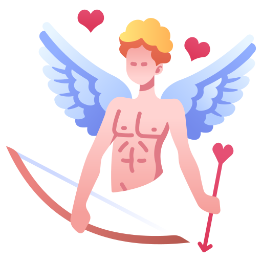
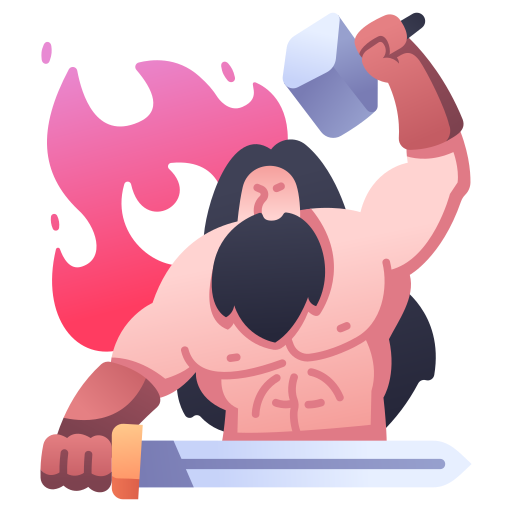
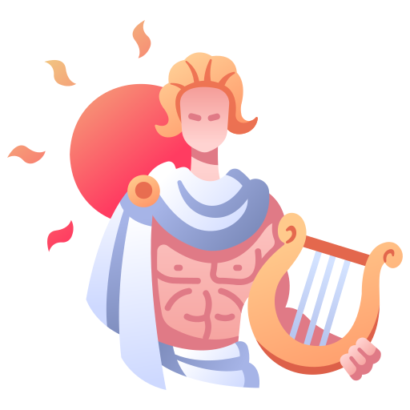
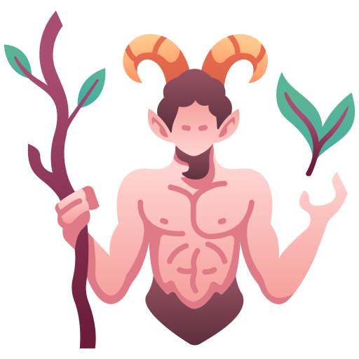

Creation and Origins of Greek Gods The Greek gods are part of ancient Greek mythology, a body of myths that
explained natural phenomena, human qualities, and life events. The Greeks believed that these deities resided on
Mount Olympus and governed various aspects of the natural world and human experience.
Purpose and Role of the Gods The Greek gods were created to explain the world around the ancient Greeks,
giving
them a way to understand natural events, human emotions, and the mysteries of life and death. Each god had
specific
domains and responsibilities, shaping human life and the environment.
Summary
The myths surrounding these gods were passed down through generations, evolving and expanding over time. They
originated from oral traditions and were eventually recorded in ancient texts by poets like Hesiod and Homer,
becoming integral to Greek culture and religion.
Zeus:Sky-Olympian Ruler

King of the Gods, ruler of the sky and thunder. Zeus is the most powerful of the Olympian gods, wielding a
thunderbolt as his weapon. Known for his many romantic affairs, both with gods and mortals, Zeus fathered many of
the gods, heroes, and mythical beings in Greek mythology.
Poseidon:Sea-Ocean Master

God of the sea, earthquakes, and horses. Known for his tempestuous nature, Poseidon controls the oceans and all
aquatic creatures. He is often depicted with a trident and is considered the creator of horses. Sailors pray to
Poseidon for safe voyages.
Hades: Underworld-Soul Keeper

God of the underworld and the dead. Ruler of the realm of the deceased, Hades oversees the final resting place of
souls. Despite his dark domain, he is a just and stern figure, ensuring the natural order of life and death.
Persephone:Spring-Rebirth Symbol
Queen of the underworld, goddess of spring. Abducted by Hades, Persephone's time in the underworld and her return
to earth bring about the seasons. Her dual role reflects the cycle of life, death, and rebirth.
Demeter: Agriculture- Earth Nurturer

Goddess of agriculture and the harvest. Demeter presides over the fertility of the earth and the cycles of life
and
death. Her daughter, Persephone's abduction by Hades, leads to the changing seasons, with Demeter's grief causing
winter.
Hera: Marriage-Protector of Women
Hera, queen of the gods, is the powerful and protective goddess of marriage and family.Known for her fierce
loyalty, she often navigates the complexities of her marriage to Zeus.
Aphrodite: Love-Passion enchantress
Goddess of love, beauty, and desire. Born from the sea
foam, Aphrodite is the epitome of beauty and passion. She has many lovers, both divine and mortal, and plays a
crucial
role in various myths, including the cause of the Trojan War.
Artemis : Hunt-Guardian of the Forest and Animals

Goddess of the hunt, wilderness, and childbirth. As Apollo's twin sister, Artemis is a fierce protector of
wildlife
and young women. She is often depicted with a bow and arrows and is accompanied by wild animals. She is also the
goddess of the moon.
Athena: Wisdom- Strategist in Battle and Wisdom
Goddess of wisdom, warfare, and crafts. Born from Zeus’s head fully armed, Athena is a strategic and just
warrior.
She is also the patroness of various crafts and skills, particularly weaving. The city of Athens is named in her
honor.
Ares: War-Embodiment of Conflict and Courage

God of war and conflict. Ares embodies the violent and chaotic aspects of battle, unlike his sister Athena, who
represents strategic warfare. Despite being one of the Olympian gods, he is not widely revered and is often
depicted
as a brutal and bloodthirsty figure.
Eros : Love-Catalyst of Romantic Desire

God of love and attraction. Often depicted as a mischievous young boy with a bow and arrows, Eros (known as Cupid
in Roman mythology) causes gods and mortals to fall in love. He is the son of Aphrodite and plays a key role in
various love stories.
Hephaestus:Fire- Artisan of Divine Crafts and Fire

God of blacksmiths, craftsmen, and fire. The lame god, Hephaestus, is the master artisan of Olympus, creating
weapons, armor, and various tools for the gods. Despite his physical imperfections, his skill in metallurgy is
unmatched.
Hermes : Trade-Swift Messenger and Guide
Messenger of the gods, god of trade, thieves, and travel. Known for his speed and cunning, Hermes carries
messages
between the gods and mortals. He is often depicted with winged sandals and a caduceus, a staff entwined with
snakes.
Apollo : Sun-Bringer of Light and Arts

God of the sun, music, poetry, and healing. Twin brother to Artemis, Apollo is associated with many arts and
sciences. He is known for his oracle at Delphi, where he imparted prophetic insights. He is often depicted with a
lyre and a laurel wreath.
Pan : Nature-God of the Wild, Shepherds, and Flocks

God of the wild, shepherds, and flocks. Pan is a rustic deity with a playful and mischievous nature, often
depicted
as half-man, half-goat. He roams the forests and pastures, playing his signature Pan flute.
Want to learn more? Watch this vid for extra info!